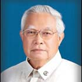

| History |
| Legislators |
| Laws |
| About |
 |
| LEGISLATORS |
| LEGISLATIVE BODY (YEAR) | INCLUSIVE YEARS | LEGISLATIVE DISTRICT/PROVINCE | LEGISLATOR | ||
| 1 | 1st Philippine Legislature | 1907 - 1909 | 1st District Iloilo Province | AVANCEÑA, Amando |  |
| 2 | 1st Philippine Legislature | 1907 - 1909 | 2nd District Iloilo Province | JALANDONI, Nicolas |  |
| 3 | 1st Philippine Legislature | 1907 - 1909 | 3rd District Iloilo Province | LAGUDA, Salvador |  |
| 4 | 1st Philippine Legislature | 1907 - 1909 | 4th District Iloilo Province | HERNANDEZ, Adriano |  |
| 5 | 1st Philippine Legislature | 1907 - 1909 | 5th District Iloilo Province | DORILLO, Regino |  |
| 6 | 2nd Philippine Legislature | 1910 - 1912 | 1st District Iloilo Province | VILLANUEVA, Francisco |  |
| 7 | 2nd Philippine Legislature | 1910 - 1912 | 2nd District Iloilo Province | LEDESMA, Carlos |  |
| 8 | 2nd Philippine Legislature | 1910 - 1912 | 3rd District Iloilo Province | LOPEZ VITO, Jose |  |
| 9 | 2nd Philippine Legislature | 1910 - 1912 | 3rd District Iloilo Province | LOPEZ VITO, Jose | |
| 10 | 2nd Philippine Legislature | 1910 - 1912 | 4th District Iloilo Province | GUANCO, Espiridion |  |
| 11 | 2nd Philippine Legislature | 1910 - 1912 | 5th District Iloilo Province | LOPEZ, Ramon | |
| 12 | 3rd Philippine Legislature | 1912 - 1916 | 1st District Iloilo Province | VILLANUEVA, Francisco | |
| 13 | 3rd Philippine Legislature | 1912 - 1916 | 2nd District Iloilo Province | SALAS, Perfecto J. |  |
| 14 | 3rd Philippine Legislature | 1912 - 1916 | 3rd District Iloilo Province | GUSTILO, Ernesto |  |
| 15 | 3rd Philippine Legislature | 1912 - 1916 | 4th District Iloilo Province | AVANCEÑA, Amando | |
| 16 | 3rd Philippine Legislature | 1912 - 1916 | 5th District Iloilo Province | MAPA, Cirilo Jr. |  |
| 17 | 3rd Philippine Legislature | 1914 - 1916 | 4th District Iloilo Province | LUTERO, Tiburcio |  |
| 18 | 4th Philippine Legislature | 1916 - 1919 | 1st District Iloilo Province | ARROYO, Jose M. |  |
| 19 | 4th Philippine Legislature | 1916 - 1919 | 2nd District Iloilo Province | LOZANO, Crescenciano |  |
| 20 | 4th Philippine Legislature | 1916 - 1919 | 3rd District Iloilo Province | GREGORIUS, Nicanor |  |
| 21 | 4th Philippine Legislature | 1916 - 1919 | 4th District Iloilo Province | LUTERO, Tiburcio | |
| 22 | 4th Philippine Legislature | 1916 - 1919 | 5th District Iloilo Province | DE LEON, Juan |  |
| 23 | 5th Philippine Legislature | 1919 - 1922 | 1st District Iloilo Province | EVANGELISTA, Jose |  |
| 24 | 5th Philippine Legislature | 1919 - 1922 | 2nd District Iloilo Province | LOZANO, Crescenciano | |
| 25 | 5th Philippine Legislature | 1919 - 1922 | 3rd District Iloilo Province | LOCSIN, Jose E. |  |
| 26 | 5th Philippine Legislature | 1919 - 1922 | 4th District Iloilo Province | EVANGELISTA, Daniel |  |
| 27 | 5th Philippine Legislature | 1919 - 1922 | 5th District Iloilo Province | SALCEDO, Victorino M. |  |
| 28 | 6th Philippine Legislature | 1922 - 1925 | 1st District Iloilo Province | EVANGELISTA, Jose | |
| 29 | 6th Philippine Legislature | 1922 - 1925 | 2nd District Iloilo Province | LOZANO, Crescenciano | |
| 30 | 6th Philippine Legislature | 1922 - 1925 | 3rd District Iloilo Province | CONFESOR, Tomas |  |
| 31 | 6th Philippine Legislature | 1922 - 1925 | 4th District Iloilo Province | TIRADOR, Federico R. |  |
| 32 | 6th Philippine Legislature | 1922 - 1925 | 5th District Iloilo Province | VARGAS, Tomas |  |
| 33 | 7th Philippine Legislature | 1925 - 1927 | 1st District Iloilo Province | EALDAMA, Eugenio | |
| 34 | 7th Philippine Legislature | 1925 - 1927 | 2nd District Iloilo Province | YBIERNAS, Vicente R. |  |
| 35 | 7th Philippine Legislature | 1925 - 1927 | 3rd District Iloilo Province | CONFESOR, Tomas | |
| 36 | 7th Philippine Legislature | 1925 - 1927 | 4th District Iloilo Province | ARANCILLO, Asencion | |
| 37 | 7th Philippine Legislature | 1925 - 1927 | 5th District Iloilo Province | CUDILLA, Venancio |  |
| 38 | 8th Philippine Legislature | 1928 - 1930 | 1st District Iloilo Province | ZULUETA, Jose C. | |
| 39 | 8th Philippine Legislature | 1928 - 1930 | 2nd District Iloilo Province | PADILLA, Engracio | |
| 40 | 8th Philippine Legislature | 1928 - 1930 | 3rd District Iloilo Province | CONFESOR, Tomas | |
| 41 | 8th Philippine Legislature | 1928 - 1930 | 4th District Iloilo Province | BUENAFLOR, Tomas |  |
| 42 | 8th Philippine Legislature | 1928 - 1930 | 5th District Iloilo Province | CUDILLA, Venancio | |
| 43 | 9th Philippine Legislature | 1931 - 1934 | 1st District Iloilo Province | ZULUETA, Jose C. | |
| 44 | 9th Philippine Legislature | 1931 - 1934 | 2nd District Iloilo Province | YBIERNAS, Vicente R. | |
| 45 | 9th Philippine Legislature | 1931 - 1934 | 3rd District Iloilo Province | VILLA, Silvestre |  |
| 46 | 9th Philippine Legislature | 1931 - 1934 | 4th District Iloilo Province | BUENAFLOR, Tomas | |
| 47 | 9th Philippine Legislature | 1931 - 1934 | 5th District Iloilo Province | CUDILLA, Venancio | |
| 48 | 10th Philippine Legislature | 1934 - 1935 | 1st District Iloilo Province | ZULUETA, Jose C. | |
| 49 | 10th Philippine Legislature | 1934 - 1935 | 2nd District Iloilo Province | YBIERNAS, Vicente R. | |
| 50 | 10th Philippine Legislature | 1934 - 1935 | 3rd District Iloilo Province | AMPIG, Atanasio |  |
| 51 | 10th Philippine Legislature | 1934 - 1935 | 4th District Iloilo Province | TIRADOR, Federico R. | |
| 52 | 1st National Assembly (Commonwealth) | 1935 - 1938 | 1st District Iloilo Province | ZULUETA, Jose C. | |
| 53 | 1st National Assembly (Commonwealth) | 1935 - 1938 | 2nd District Iloilo Province | MONTINOLA, Ruperto |  |
| 54 | 1st National Assembly (Commonwealth) | 1935 - 1938 | 3rd District Iloilo Province | CONFESOR, Tomas | |
| 55 | 1st National Assembly (Commonwealth) | 1935 - 1938 | 4th District Iloilo Province | BUENAFLOR, Tomas | |
| 56 | 10th Philippine Legislature | 1935 - 1938 | 5th District Iloilo Province | CUDILLA, Venancio | |
| 57 | 1st National Assembly (Commonwealth) | 1935 - 1938 | 5th District Iloilo Province | SALCEDO, Victorino M. | |
| 58 | 2nd National Assembly (Commonwealth) | 1939 - 1940 | 2nd District Iloilo Province | MONTINOLA, Ruperto | |
| 59 | 2nd National Assembly (Commonwealth) | 1939 - 1941 | 1st District Iloilo Province | ZULUETA, Jose C. | |
| 60 | 2nd National Assembly (Commonwealth) | 1939 - 1941 | 3rd District Iloilo Province | AMPIG, Atanasio | |
| 61 | 2nd National Assembly (Commonwealth) | 1939 - 1941 | 4th District Iloilo Province | BUENAFLOR, Tomas | |
| 62 | 2nd National Assembly (Commonwealth) | 1939 - 1941 | 5th District Iloilo Province | SALCEDO, Victorino M. | |
| 63 | National Assembly (Japanese Regime) | 1943 - 1944 | Iloilo Province | YBIERNAS, Vicente R. | |
| 64 | National Assembly (Japanese Regime) | 1943 - 1944 | Iloilo Province | MAPA, Cirilo Jr. | |
| 65 | National Assembly (Japanese Regime) | 1943 - 1944 | Iloilo Province | YBIERNAS, Fortunato R. | |
| 66 | National Assembly (Japanese Regime) | 1943 - 1944 | Iloilo Province | CARAM, Fermin Sr. C. |  |
| 67 | 1st Congress of the Commonwealth (Liberation Period) | 1945 - 1945 | 1st District Iloilo Province | ZULUETA, Jose C. | |
| 68 | 1st Congress of the Commonwealth (Liberation Period) | 1945 - 1945 | 2nd District Iloilo Province | LEDESMA, Oscar C. | |
| 69 | 1st Congress of the Commonwealth (Liberation Period) | 1945 - 1945 | 3rd District Iloilo Province | LUTERO, Tiburcio | |
| 70 | 1st Congress of the Commonwealth (Liberation Period) | 1945 - 1945 | 4th District Iloilo Province | DE LOS SANTOS, Ceferino | |
| 71 | 1st Congress of the Commonwealth (Liberation Period) | 1945 - 1945 | 5th District Iloilo Province | BORRA, Juan V. |  |
| 72 | 1st Congress of the Republic | 1946 - 1946 | 1st District Iloilo Province | ZULUETA, Jose C. | |
| 73 | 2nd Congress of the Commonwealth | 1946 - 1946 | 1st District Iloilo Province | ZULUETA, Jose C. | |
| 74 | 2nd Congress of the Commonwealth | 1946 - 1946 | 2nd District Iloilo Province | LEDESMA, Oscar C. | |
| 75 | 2nd Congress of the Commonwealth | 1946 - 1946 | 3rd District Iloilo Province | LUTERO, Tiburcio | |
| 76 | 2nd Congress of the Commonwealth | 1946 - 1946 | 4th District Iloilo Province | PEÑAFLORIDA, Mariano B. | |
| 77 | 2nd Congress of the Commonwealth | 1946 - 1946 | 5th District Iloilo Province | BORRA, Juan V. | |
| 78 | 1st Congress of the Republic | 1946 - 1947 | 4th District Iloilo Province | PEÑAFLORIDA, Mariano B. | |
| 79 | 1st Congress of the Republic | 1946 - 1949 | 2nd District Iloilo Province | LEDESMA, Oscar C. | |
| 80 | 1st Congress of the Republic | 1946 - 1949 | 3rd District Iloilo Province | LUTERO, Tiburcio | |
| 81 | 1st Congress of the Republic | 1948 - 1949 | 4th District Iloilo Province | DEMAISIP, Gaudencio | |
| 82 | 1st Congress of the Republic | 1946 - 1949 | 5th District Iloilo Province | BORRA, Juan V. | |
| 83 | 1st Congress of the Republic | 1947 - 1949 | 1st District Iloilo Province | NONATO, Mateo M. | |
| 84 | 2nd Congress of the Republic | 1950 - 1951 | 1st District Iloilo Province | ZULUETA, Jose C. | |
| 85 | 2nd Congress of the Republic | 1950 - 1953 | 2nd District Iloilo Province | ESPINOSA, Pascual P. |  |
| 86 | 2nd Congress of the Republic | 1950 - 1953 | 3rd District Iloilo Province | CONFESOR, Patricio V. |  |
| 87 | 2nd Congress of the Republic | 1950 - 1953 | 4th District Iloilo Province | LADRIDO, Ricardo Yap |  |
| 88 | 2nd Congress of the Republic | 1950 - 1953 | 5th District Iloilo Province | ALDEGUER, Jose M. | |
| 89 | 3rd Congress of the Republic | 1954 - 1955 | 2nd District Iloilo Province | GANZON, Rodolfo |  |
| 90 | 3rd Congress of the Republic | 1954 - 1957 | 1st District Iloilo Province | TRONO, Pedro G. |  |
| 91 | 3rd Congress of the Republic | 1954 - 1957 | 3rd District Iloilo Province | TABIANA, Ramon C. |  |
| 92 | 3rd Congress of the Republic | 1954 - 1957 | 4th District Iloilo Province | LADRIDO, Ricardo Yap | |
| 93 | 3rd Congress of the Republic | 1954 - 1957 | 5th District Iloilo Province | ALDEGUER, Jose M. | |
| 94 | 4th Congress of the Republic | 1958 - 1961 | 1st District Iloilo Province | TRONO, Pedro G. | |
| 95 | 4th Congress of the Republic | 1958 - 1961 | 2nd District Iloilo Province | ESPINOSA, Pascual P. | |
| 96 | 4th Congress of the Republic | 1958 - 1961 | 3rd District Iloilo Province | ABORDO, Domitilo G. | |
| 97 | 4th Congress of the Republic | 1958 - 1961 | 4th District Iloilo Province | LADRIDO, Ricardo Yap | |
| 98 | 4th Congress of the Republic | 1958 - 1961 | 5th District Iloilo Province | ALDEGUER, Jose M. | |
| 99 | 5th Congress of the Republic | 1962 - 1964 | 2nd District Iloilo Province | GANZON, Rodolfo | |
| 100 | 5th Congress of the Republic | 1962 - 1964 | 3rd District Iloilo Province | TABIANA, Ramon C. | |
| 101 | 5th Congress of the Republic | 1962 - 1965 | 1st District Iloilo Province | TRONO, Pedro G. | |
| 102 | 5th Congress of the Republic | 1962 - 1965 | 3rd District Iloilo Province | TABIANA, Gloria M. | |
| 103 | 5th Congress of the Republic | 1962 - 1965 | 4th District Iloilo Province | LADRIDO, Ricardo Yap | |
| 104 | 5th Congress of the Republic | 1962 - 1965 | 5th District Iloilo Province | ALDEGUER, Jose M. | |
| 105 | 6th Congress of the Republic | 1966 - 1969 | 1st District Iloilo Province | TRONO, Pedro G. | |
| 106 | 6th Congress of the Republic | 1966 - 1969 | 2nd District Iloilo Province | CARAM, Fermin Jr. Z. |  |
| 107 | 6th Congress of the Republic | 1966 - 1969 | 3rd District Iloilo Province | TABIANA, Gloria M. | |
| 108 | 6th Congress of the Republic | 1966 - 1969 | 4th District Iloilo Province | LADRIDO, Ricardo Yap | |
| 109 | 6th Congress of the Republic | 1966 - 1969 | 5th District Iloilo Province | ALDEGUER, Jose M. | |
| 110 | 7th Congress of the Republic | 1970 - 1972 | 1st District Iloilo Province | ZULUETA, Jose C. | |
| 111 | 7th Congress of the Republic | 1970 - 1972 | 2nd District Iloilo Province | CARAM, Fermin Jr. Z. | |
| 112 | 7th Congress of the Republic | 1970 - 1972 | 3rd District Iloilo Province | TABIANA, Gloria M. | |
| 113 | 7th Congress of the Republic | 1970 - 1972 | 4th District Iloilo Province | PEÑAFLORIDA, Mariano B. | |
| 114 | 7th Congress of the Republic | 1970 - 1972 | 5th District Iloilo Province | ALDEGUER, Jose M. | |
| 115 | Regular Batasang Pambansa | 1984 - 1986 | Iloilo Province, Region VI | MONFORT, Narciso D. |  |
| 116 | Regular Batasang Pambansa | 1984 - 1986 | Iloilo Province, Region VI | DEFENSOR, Arthur Sr. D. |  |
| 117 | Regular Batasang Pambansa | 1984 - 1986 | Iloilo Province, Region VI | CARAM, Fermin Jr. Z. | |
| 118 | Regular Batasang Pambansa | 1984 - 1986 | Iloilo Province, Region VI | BRITANICO, Salvador B. |  |
| 119 | Regular Batasang Pambansa | 1984 - 1986 | Iloilo Province, Region VI | PALMARES, Rafael P. |  |
| 120 | 8th Congress of the Republic | 1987 - 1992 | 1st District Iloilo Province | GARIN, Oscar G. |  |
| 121 | 8th Congress of the Republic | 1987 - 1992 | 2nd District Iloilo Province | LOPEZ, Alberto J. |  |
| 122 | 8th Congress of the Republic | 1987 - 1992 | 3rd District Iloilo Province | TIRADOR, Licurgo P. |  |
| 123 | 8th Congress of the Republic | 1987 - 1992 | 4th District Iloilo Province | MONFORT, Narciso D. | |
| 124 | 8th Congress of the Republic | 1987 - 1992 | 5th District Iloilo Province | TUPAS, Niel D. |  |
| 125 | 9th Congress of the Republic | 1992 - 1995 | 1st District Iloilo Province | GARIN, Oscar G. | |
| 126 | 9th Congress of the Republic | 1992 - 1995 | 2nd District Iloilo Province | LOPEZ, Alberto J. | |
| 127 | 9th Congress of the Republic | 1992 - 1995 | 3rd District Iloilo Province | TIRADOR, Licurgo P. | |
| 128 | 9th Congress of the Republic | 1992 - 1995 | 4th District Iloilo Province | PANES, Nicetas P. |  |
| 129 | 9th Congress of the Republic | 1992 - 1995 | 5th District Iloilo Province | TUPAS, Niel D. |  |
| 130 | 10th Congress of the Republic | 1995 - 1998 | 1st District Iloilo Province | GARIN, Oscar G. | |
| 131 | 10th Congress of the Republic | 1995 - 1998 | 2nd District Iloilo Province | LOPEZ, Alberto J. | |
| 132 | 10th Congress of the Republic | 1995 - 1998 | 3rd District Iloilo Province | TIRADOR, Licurgo P. | |
| 133 | 10th Congress of the Republic | 1995 - 1998 | 4th District Iloilo Province | MONFORT, Narciso D. | |
| 134 | 10th Congress of the Republic | 1995 - 1998 | 5th District Iloilo Province | TUPAS, Niel D. | |
| 135 | 11th Congress of the Republic | 1998 - 2001 | 1st District Iloilo Province | GARIN, Ninfa S. |  |
| 136 | 11th Congress of the Republic | 1998 - 2001 | 2nd District Iloilo Province | SYJUCO, Augusto Jr. L. |  |
| 137 | 11th Congress of the Republic | 1998 - 2001 | 3rd District Iloilo Province | PARCON, Manuel P. |  |
| 138 | 11th Congress of the Republic | 1998 - 2001 | 4th District Iloilo Province | MONFORT, Narciso D. | |
| 139 | 11th Congress of the Republic | 1998 - 2001 | 5th District Iloilo Province | SUPLICO, Rolex T. |  |
| 140 | 12th Congress of the Republic | 2001 - 2004 | 1st District Iloilo Province | GARIN, Oscar G. | |
| 141 | 12th Congress of the Republic | 2001 - 2004 | 2nd District Iloilo Province | SYJUCO, Augusto Jr. L. | |
| 142 | 12th Congress of the Republic | 2001 - 2004 | 3rd District Iloilo Province | DEFENSOR, Arthur Sr. D. | |
| 143 | 12th Congress of the Republic | 2001 - 2004 | 4th District Iloilo Province | MONFORT, Narciso D. | |
| 144 | 12th Congress of the Republic | 2001 - 2004 | 5th District Iloilo Province | SUPLICO, Rolex T. | |
| 145 | 13th Congress of the Republic | 2004 - 2007 | 1st District Iloilo Province | GARIN, Janette L. |  |
| 146 | 13th Congress of the Republic | 2004 - 2007 | 2nd District Iloilo Province | SYJUCO, Judy J. |  |
| 147 | 13th Congress of the Republic | 2004 - 2007 | 3rd District Iloilo Province | DEFENSOR, Arthur Sr. D. | |
| 148 | 13th Congress of the Republic | 2004 - 2007 | 4th District Iloilo Province | BIRON, Ferjenel G. |  |
| 149 | 13th Congress of the Republic | 2004 - 2007 | 5th District Iloilo Province | SUPLICO, Rolex T. | |
| 150 | 14th Congress of the Republic | 2007 - 2010 | 1st District Iloilo Province | GARIN, Janette L. | |
| 151 | 14th Congress of the Republic | 2007 - 2010 | 2nd District Iloilo Province | SYJUCO, Judy J. | |
| 152 | 14th Congress of the Republic | 2007 - 2010 | 3rd District Iloilo Province | DEFENSOR, Arthur Sr. D. | |
| 153 | 14th Congress of the Republic | 2007 - 2010 | 4th District Iloilo Province | BIRON, Ferjenel G. | |
| 154 | 14th Congress of the Republic | 2007 - 2010 | 5th District Iloilo Province | TUPAS, Niel Jr. C. | |
| 155 | 15th Congress of the Republic | 2010 - 2013 | 1st District Iloilo Province | GARIN, Janette L. |
 |
| 156 | 15th Congress of the Republic | 2010 - 2013 | 2nd District Iloilo Province | SYJUCO, Augusto Boboy, Ph.D. |
 |
| 157 | 15th Congress of the Republic | 2010 - 2013 | 3rd District Iloilo Province | DEFENSOR, Arthur Jr. R. |
 |
| 158 | 15th Congress of the Republic | 2010 - 2013 | 4th District Iloilo Province | BIRON, Ferjenel G. |
 |
| 159 | 15th Congress of the Republic | 2010 - 2013 | 5th District Iloilo Province | TUPAS, Niel Jr. C. |
 |
| 160 | 16th Congress of the Republic | 2013 - 2016 | 1ST District, Iloilo Province | GARIN, Oscar "Richard" Jr. S. | |
| 161 | 16th Congress of the Republic | 2013 - 2016 | 2ND District, Iloilo Province | GORRICETA, Arcadio H. |  |
| 162 | 16th Congress of the Republic | 2013 - 2016 | 3RD District, Iloilo Province | DEFENSOR, Arthur Jr. R. | |
| 163 | 16th Congress of the Republic | 2013 - 2016 | 4TH District, Iloilo Province | BIRON, Hernan Jr. G. | |
| 164 | 16th Congress of the Republic | 2013 - 2016 | 5TH District, Iloilo Province | TUPAS, Niel Jr. C. |

Congressional Library Bureau
Legislative Library Service